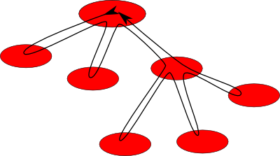
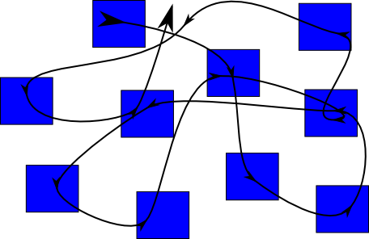

Event-driven programming is a programming paradigm in which the flow of the program is determined by events.
It can also be defined as an application architecture technique in which the application has a main loop which is clearly divided down to two sections:
AnyEvent + back-ends (i.e. EV)
Callbacks...
| Structured top-down programming | Event-driven programming with callbacks |
|---|---|
|  |  |
A state machine, is conceived as an abstract machine that can be in one of a finite number of states.
The machine is in only one state at a time; the state it is in at any given time is called the current state.
It can change from one state to another when initiated by a triggering event or condition; this is called a transition.
In practice, there are also...
POE::NFA->spawn(
inline_states => {
initial => {
setup => \&setup_stuff,
},
state_login => {
on_entry => \&login_prompt,
on_input => \&save_login,
},
state_password => {
on_entry => \&password_prompt,
on_input => \&check_password,
},
state_cmd => {
on_entry => \&command_prompt,
on_input => \&handle_command,
},
},
)->goto_state(initial => "setup");
Lots of modules: POE::NFA, FSA::Engine, FSA::Rules, FSM::Simple, Basset::Machine, etc...
No one fitted my requirements well enough:
Initially (2006)...
Today...
class Foo;
use parent 'Class::StateMachine';
# define what to do when some event happens:
sub foo :OnState(one) { ... }
sub foo :OnState(two) { ... }
...
# dispatch events
$obj->state('one');
$obj->foo;
$obj->state('two');
$obj->foo;
use parent qw(Class::StateMachine);
use Class::StateMachine::Declarative
foo => { ... },
bar => { ... };
use Class::StateMachine::Declarative
$state_name => { enter => $enter_action,
leave => $leave_action,
transitions => { $event => $target_state,
...
}
},
...
use Class::StateMachine::Declarative
new => { transitions => { run => 'asking_for_login' } },
asking_for_login => { enter => 'print_login_prompt',
transitions => { got_login => 'password' } },
asking_for_pwd => { enter => 'print_pwd_prompt',
transitions => { got_pwd => 'asking_for_cmd',
got_pwd_error => 'asking_for_login' } },
asking_for_cmd => { enter => 'print_cmd_prompt',
transitions => { got_cmd => 'running_cmd' } },
running_cmd => { enter => 'run_cmd',
transitions => { cmd_done => 'asking_for_cmd' } };
$state_name => { ...,
substates => [ $substate_name => \%substate_decl,
... ],
}
$state_name => { advance => $event_name,
... }
$state_name => { before => { $event => $method,
...
},
...,
}
use Class::StateMachine::Declarative
__any__ => { advance => 'on_done',
transitions => { on_closed => 'stopped' } },
auth => { transitions => { on_error => 'login' },
substates => [ login => { enter => 'ask_login' },
pwd => { enter => 'ask_pwd' },
before => { done => 'check_pwd' } } ] },
repl => { transitions => { on_error => 'ask' },
substates => [ ask => { enter => 'ask_cmd' },
run => { enter => 'run_cmd',
transitions => { on_done => 'ask' } } ] },
stopped => { enter => 'tell_owner' };
$state_name => { delay => \@events_to_be_delayed,
ignore => \@events_to_be_ignored,
...
}
The key to code maintainability is the API provided from the purple layer to the blue layer
The key to code maintainability is the API provided from the purple layer to the blue layer
A remote console application: